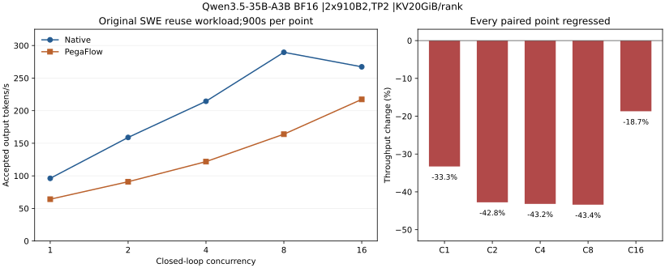

全部五档吞吐回退 · 完整保留PegaFlow：原 SWE 多轮复用实验
restart-02 完成报告
10个900秒观察点；2702条正式请求；协议失败0。C8：289.576667 →163.912222 tok/s（−43.3959%）。C8与C16均负，未触发预注册的正向倒序确认。
Qwen3.5-35B-A3B BF16 · 双卡910B2/TP2 · KV20GiB/rank · Candidate host pool30GiB。单窗观察，未随机交错，无重复置信区间。
两臂显式关闭CPU绑定，与上游默认true不同，缺少必要性证据；本报告限定该自定义配置，不替代按新MOD要求恢复默认绑定后的实验资格或结果。

| 并发 | Native tok/s | PegaFlow tok/s | 变化 | TTFT P95秒 N/P | 请求数 N/P |
|---|
| C1 | 96.182222 | 64.162222 | -33.2910% | 1.150 / 2.786 | 155 / 117 |
| C2 | 158.941111 | 90.964444 | -42.7685% | 1.437 / 4.731 | 240 / 148 |
| C4 | 214.448889 | 121.834444 | -43.1872% | 1.950 / 6.272 | 314 / 197 |
| C8 | 289.576667 | 163.912222 | -43.3959% | 2.486 / 7.005 | 433 / 270 |
| C16 | 267.316667 | 217.346667 | -18.6932% | 9.045 / 7.398 | 446 / 382 |
原件与计量
吞吐从原始chunk时间[0,900)内的实际生成token重算，完整排空另计。TTFT P95使用原协议的窗口内完成请求总体；新五数据集使用独立的有限批次定义。两资格与正式窗口共2797条请求已逐条核验。配置、原始包、SHA和验证器可追溯。
逐窗口原件清单 · 机器可读结果 · 完整报告与命令身份 · 最终环境、退出记录及受控输入索引
质量与机制解释
两个长前缀冷/热/真实外部恢复样本逐token一致，零save/load失败。此前Native短样本不重复的失败保留；32-token样本不能证明普遍数值等价或SWE解题质量。各臂按实际生成token续接历史，动态prompt可能不同。
当前HMA安全逻辑关闭Pega本地前缀命中；C8 Native本地命中约83.6%，Candidate本地0、外部约76.7%，从host加载约96.9GB。原Native没有抢占，外部恢复在该负载下增加成本。该解释有源码/计数支持，单因果机制仍需独立容量实验确认。
费用与四项目标
同卡数、同费率且只计900秒服务窗口，C8单位生成token成本约为Native的1.767倍；没有据此声称本机账单。有效算力参考、>=32K长稳、报价适用性和多租户利用率未验证；本轮吞吐回退不支持提升目标。完整执行不等于四目标通过。
本报告仅覆盖原SWE复用协议；不替代冻结五数据集，也不关闭T1–T5或RDMA/TailGuard验收。原始题目和对话受控保存，公共清单核对其身份，不宣称公开读回受限输入。